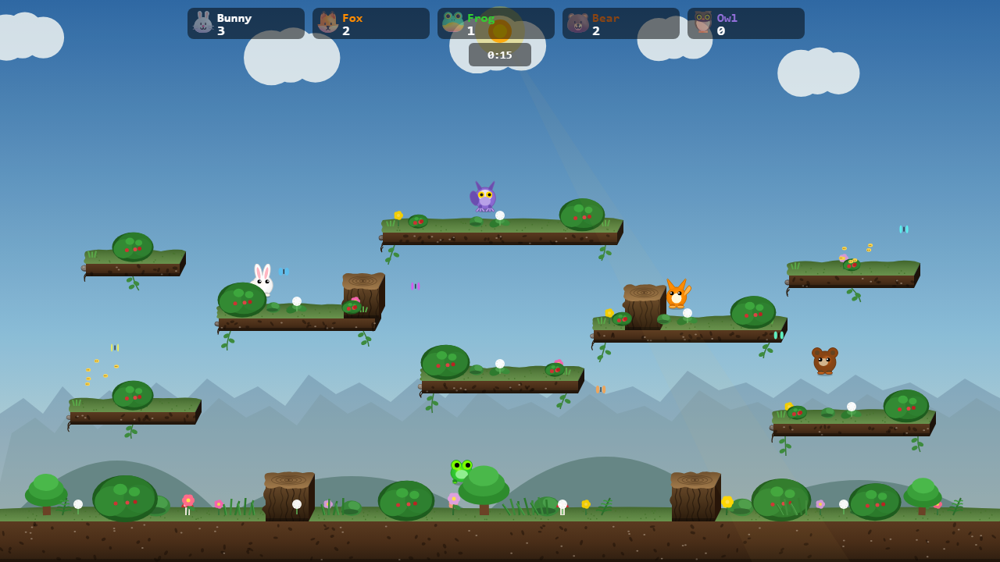
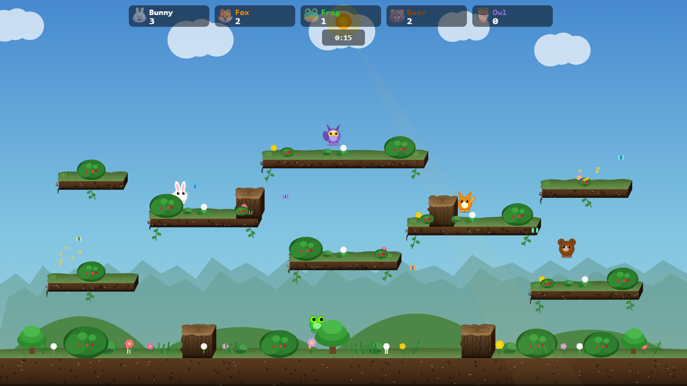
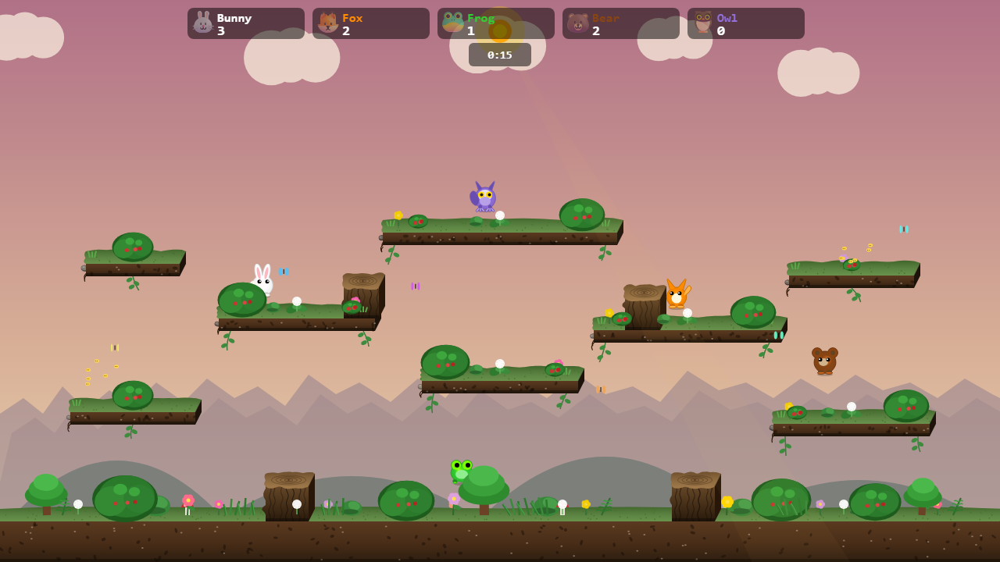
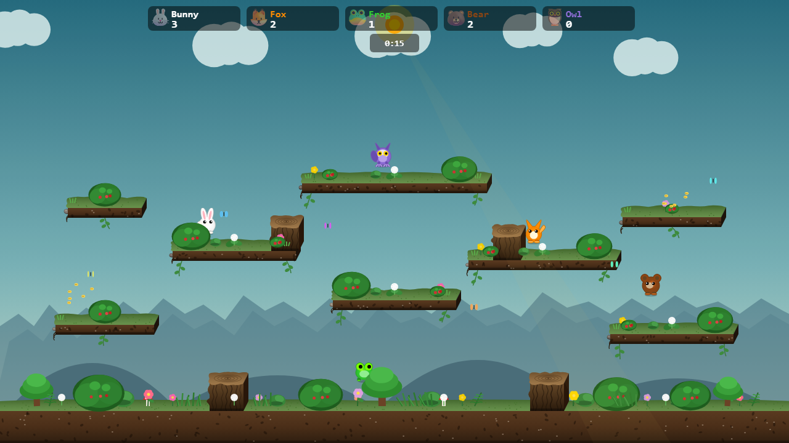

Meadow: colour & depth
Three colour and depth studies using the existing game renderer. Same fixed scene, characters, platforms, bushes and lighting. Bushes still hide characters. Choose a direction, then drag the divider to compare it with the current colours.


CurrentA · Morning blueAll four directions


Design studies, not a gameplay release. The same bunny is intentionally partly hidden by the bush in every sample. Night views retain the current foreground tint. Baseline: main commit 3ef5d80. Rendered at 1280 × 720, noon/midnight, with fixed positions and visual timers.